Блюзовый календарь: хронология событий
|
ЛИСТАЯ СТАРЫЕ СТРАНИЦЫ журнала LIVING BLUES) Oct. 15th, 2010 at 1:53 AM
Brownie McGhee, Memphis Slim, Johnny Shines, Henry Miles, Son House, Yank Rachell Brownie McGhee, LIVING BLUES #13 (1973) отрывок из интервью Барри Элмзу 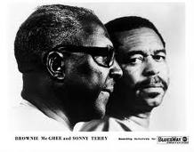 …В общем, Джей Би Лонг познакомил нас с Санни (Терри). Я в то время играл с Джорданом Уэббом на гармонике, а Терри работал с Блайнд Боем Фуллером. И вот он назначает встречу- вторая неделя апреля 1939 года, 211-й дом по Уэст Дэйвис Стрит. Воскресенье, прямо за его магазином, я помню это как сейчас…Познакомились мы, поехали в Чикаго записываться, я до этого в студии никогда не был. Возвращаемся с уже реально больным Фуллером, я уезжаю к себе в Теннеси, и приходит мне туда телеграмма от Джей Би: "Брауни, напиши мне песню.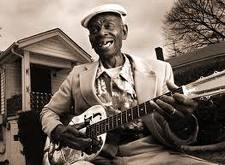 Фуллер очень болен, пусть песня называется Please Mr. Fuller Don't Die". Я начал работать над ней, и не успел я закончить, а мысли-стать материальными - звонит он мне. "Фуллер умер!", говорит. "Может напишешь песню The Death Of Blind Boy Fuller ? И если получится- обязательно упомяни его женщин в песне, он так был ими увлечен". Вот так эта песня и появилась. Джей Би Лонг потом говорил всем, что это он ее написал, но это не так. А что я мог тогда сказать- он был моей отправной точкой. Такое вот Начало Начал, как я это называю (смеется).Memphis Slim, LIVING BLUES # 94 (1990), отрывок из интервью Джиму О'Нилу 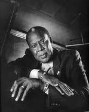 …Первый раз я повстречал Роберта Джонсона в маленьком городке Мэрианна, что в Арканзасе. Он там играл, я тоже, вот он и говорит: "Сыграем?" Ну, я сел за фортепиано, он уселся на него верхом с гитарой, и вещал прямо оттуда сверху.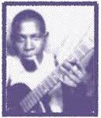 Он просто высекал голосом этот блюз. А как он пил! Меня мог перепить, а в те времена я мог заложить так, что дай Боже! Но вот он бухал по-настоящему. Играл и пел этот свой блюз, а в гитару у него словно был вмонтирован усилитель. Ужасный был человек. Каждый раз, когда напивался, проклинал Бога. Только начнет ругаться- бац-и кабак пустой уже. Никто рядом и стоять не хотел. Все боялись- он поносил Господа последними словами. Закончит ругань свою, оглянется, бывало, а рядом и нет уже никого. Все говорили: "Держись подальше от этого придурка. Если Бог шарахнет его молнией, то так, что заденет и тебя"Johnny Shines, LIVING BLUES # 22 (1975), отрывок из интервью Питу Уэлдингу 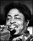 …Кабаки, кажется так вы их называете. Много таких мест было в Хелене, Арканзас. Парни, державшие их, крышевались полицией, местной, конечно же, не федеральной. Сейчас кабак- это место, где кто в карты играет, кто пьет, кто поговорить пришел, кому что, в общем. Спиртное раньше подавалось не так, как мы привыкли сейчас в таверне, или в баре. Пиво наливали в так называемые "чаши", виски пилось прямо "с горла".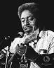 Стаканов не было тогда, пей виски с бутылки, или используй пивную посуду- чашами называлась оловянная тара, похожая на консервные банки. Пользоваться стеклянными кружками было нельзя, иначе весь кабак сидел бы с разбитыми головами. Такие вот жесткие места. Когда играешь в таком месте- сидишь в плетеном кресле, в глубоком тылу и буйствуешь себе потихоньку- усилителей же не было тогда, петь надо было так громко, как только можешь.Как получали работу? Играешь себе, приходит владелец клуба, говорит, что слышал о тебе и предлагает ставку, дальше сам решаешь. Некоторые места платили по полтора доллара на человека, но играя песни, которые заказывает публика мы получали неплохие чаевые, как-то так. 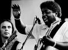 Иногда люди просто швыряли в тебя деньгами, или, что хуже, пытались засунуть их тебе в гитару. Некоторые пытались "поить" инструмент виски или пивом. Короче, приходилось постоянно быть на стреме с такими любителями музыки. Атмосфера в большинстве кабаков была именно такой, но у меня проблем с этим особо никогда и не было- я был везде "своим парнем".Henry Miles, LIVING BLUES # 51 (1981), отрывок из интервью Бернхему Уэар …Начинал я играть с Ерлом МакДональдом. Мы постоянно ездили, путешествовали… Рекламировали муку Балларда, в рамках акции "Южный стандарт". Они прозвали нас "Шеф-повара Балларда" и отсылали играть повсюду- мы проехали всю Флориду, весь Юг, Нью-Йорк, Чикаго и Детройт с окрестностями. Мы попросту не останавливались. Играли в больших местах, как например Palmer House в Чикаго, Cadillac Hotel в Детройте, St. Regis Hotel в Нью-Йорке. Даже на Всемирной Ярмарке играли. По школам, колледжам, церквям для белых…Для мэра города… Играли блюз, свинговые мелодии, марши. Любые песни, как например My Old Kentucky Home, это был конек рекламной кампании. Пели в нашем оркестре все. Ерл пел блюз- игроки на кувшинах в jug bands всегда в нем неплохо разбирались. Ерл играл на пианино, барабанах, басу. Репетировали мы три раза в неделю: понедельник, среда, пятница, вне зависимости от того, была у нас работа, или нет. Son House, LIVING BLUES # 31 (1977), отрывок из интервью Джеффу Тайтону (за связность мыслей Сана Хауса переводчик ответственности не несет)) 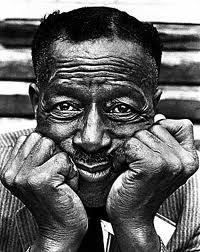 …Я не играл на гитаре, пока это…немного не постарел. Случилось это три-четыре мили к югу от Кларксдэйла- приехал туда чувак, играл на гитаре бутылочкой от лекарств, как у бабушки. Я был против- прыгал весь вечер перед ним, кричал, мол, что это неправильно- в те времена я был очень религиозен…Нет, я по-настоящему думал, что это одно из самых плохих занятий на свете. Нет пути в рай, если валяешь дурака в такой форме. Положить руку на старую гитару уже было грехом. Для меня (смеется). Приходим, а вокруг этого парня уже толпа- сидит, пилит по гитаре этой бутылочкой, народ смотрит внимательно- а с ним еще один парень играл. Тут я себя спрашиваю: "Что за народ, который подобной хренью интересуется?" А мы были оба из Кларксдэйла, я и этот чувак. Тут он мне и говорит : " Чувствую, что здесь слайдом кто-то еще играет" А я в ответ: "Да, да.. и кто же, интересно?" Так мы и познакомились. Начал я на гитаре играть, вожу слайдом по струнам, а он мне: "Эй, чувак, зачем так- что ты делаешь???" Отвечаю: "Да ничего, просто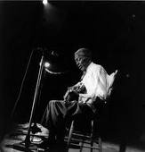 (хохочет)…Просто подглядывал за твоим напарником" Он и сказал тогда: "Ты прикидываешься. Ты прекрасно знаешь, что он делал. Ты слышишь все, что он делает, и даже не нависаешь над ним, как остальные. Просто скажи, что ты в курсе как играть такую музыку и иди своей дорогой, даже не начинай". А я продолжал.. Нет, не так- потом мы пошли вместе и познакомились еще с одним чуваком, он был шулером, продал мне гитару за полтора доллара, а я раздобыл где-то старую бутылку, чтоб играть. Так и учился. И научился. Это начало становиться моей сущностью. И я не просто говорю, базарю там… Я говорю: "Вот я, здесь и сейчас, с этой штукой. О да, чувак".Yank Rachell, LIVING BLUES # 79 (1988), отрывок из интервью Стиву Кашингу, Питу Крофорду и Ричу ДельГроссо 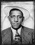 …Шел я однажды по дороге, улиц не было в те дни- было мне лет восемь…Сидит мужик на завалинке, на старой мандолине играет- знаете, были такие, позолоченные, с полосками. Прохожу мимо, а папа и мама очень хорошо его знали. Звали его Олли Роув. Никогда этого не забуду. Спрашиваю, значит: "А что это у вас такое, мистер Олли?" "Мандолина,сынок"- говорит. "Ух ты, мне нравится,"- отвечаю. Тут он и говорит: "А давай-ка я тебе ее продам". Ну, я и взял ее в руки, дайте-ка проверить, говорю. Сыграл там что-то..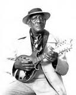 Он и спрашивает: "Покупаешь?" "Денег нет,"-говорю. "Сколько хотите за нее?" "Пять долларов". А по тем временам пять долларов это были деньги, реальные деньги. Мне восемь лет. Денег нет. Пять долларов я не то что в руках никогда не держал, не видел даже. "Нет у меня пяти долларов,"-говорю. "Хотите, поменяемся- я вам свинью, вы мне мандолину". "Валяй, тащи свою свинью". Он-то знал, сколько стоит свинья, а я нет. Но мне было плевать- у родителей было много свиней. Нашел мешок, croaker sack, как их тогда называли, пошел в амбар и потащил свинью к нему домой- они недалеко от нас жили. Я даже и подумать о чем-то другом не мог в тот момент…Прим. переводчика(из другого интервью Рейчелла на эту тему): В результате мама ему сказала: "А теперь иди и ешь свою мандолину". |
Перевод Валерия Писигина и Ильи Верховского harp1896
Blues.Ru -
Новости |
Музыканты |
Стили |
CD Обзор |
Концерты |
Live Band |
Лента |
Форум
Блюзовый календарь: хронология событий